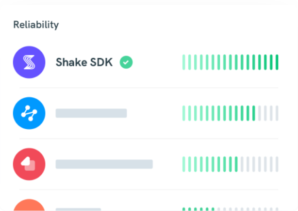
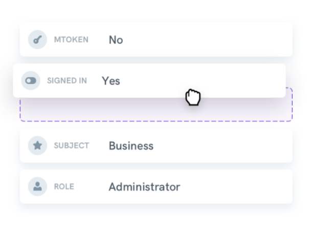

Our SDk focuses and excels on perfect bug reporting experiense

In - app bug reporwint plus we're obsessed with our realiability and SDK size which continue toping industry stansards.

Dtaa you send your self is fully costomized so reduce time to fix bug and significancy.